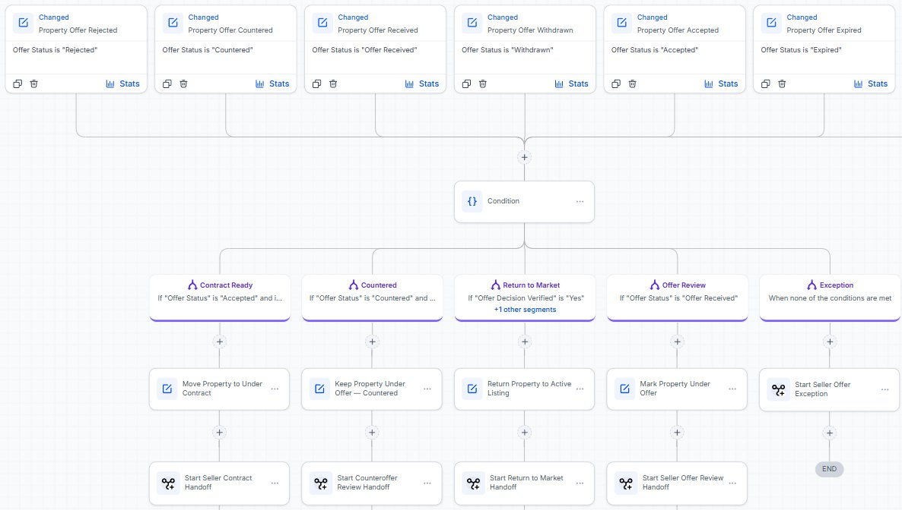
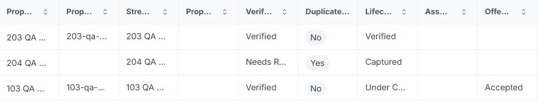
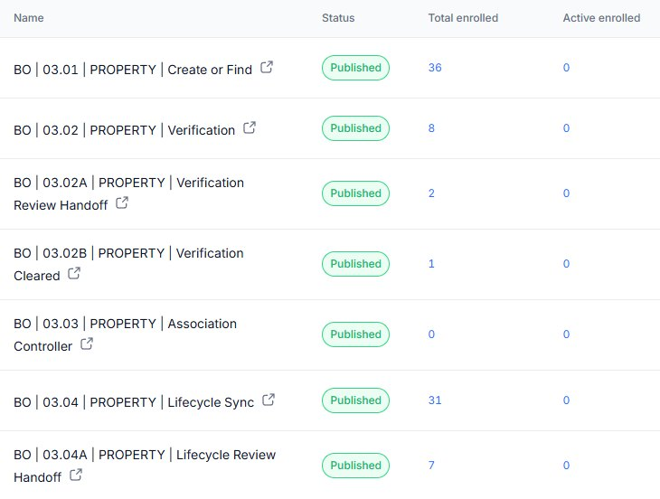
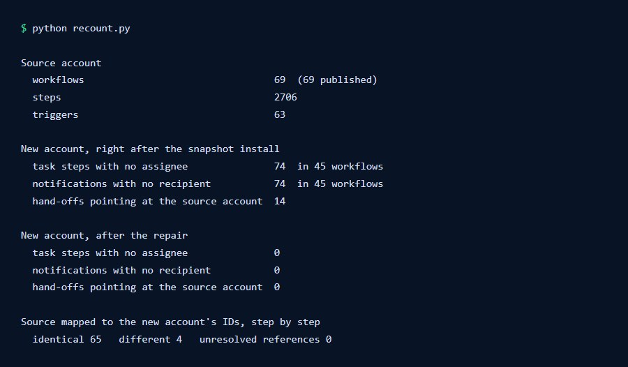
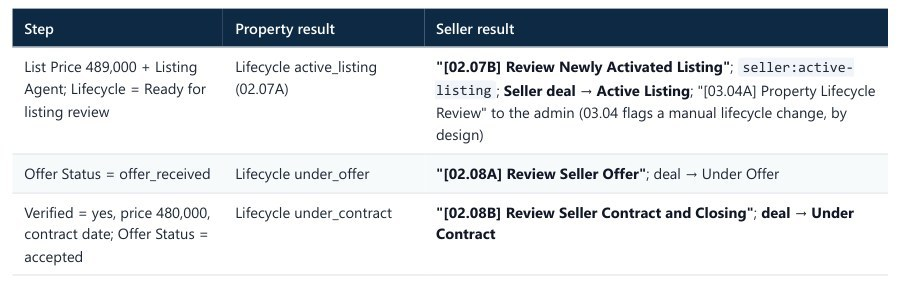
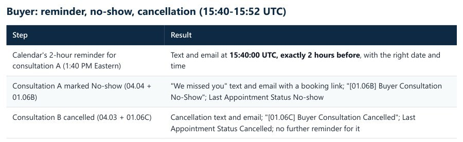

Case study: a GoHighLevel system for real estate brokerages
A brokerage system, tested until it held
A US company sells a GoHighLevel system to real estate brokerages. A first version existed when I joined, but parts of it had never run. Using Claude Code, I tested it with real runs, built what was missing, and installed it in a fresh account to see what broke. That install found 162 broken references that no screen shows.
- workflows
- 69
- automation steps
- 2,706
- broken references found
- 162
- Agent records the accepted offerDecision verified, price and contract date on the property
- The property record checks itComplete, so its status becomes under contract
- The seller's deal followsUnder contract, with a closing task for the agent
The system, as built
I drew these charts from the working system. The screens further down come from the source account, cropped so they show no account details. Every lead in my tests was made up.
Swipe sideways to see the whole chart.
Swipe sideways to see the whole chart.
The brief
The company sells this system to brokerages of all sizes, and its own team installs it. That's a harder test than a single custom build: it has to work in an account nobody has tried yet, for a team that didn't build it. I worked with the GoHighLevel specialist who started it, and a teammate who ran manual tests.
-
Every lead gets a reply and an owner
A form starts an acknowledgement, a round robin assignment, a first follow-up in the agent's name and a task.
-
One record per property
The seller's form creates the property record and links the seller as owner. Listing, offers and contract then run from that record.
-
Consent comes first
Opt-outs become tags that every message checks. Nurture messages only go out Monday to Friday, 12:00 to 17:00, in the contact's time zone.
-
It has to survive installation
The system ships as a GoHighLevel snapshot: one master, loaded into a new account for each brokerage. A snapshot carries the setup, never contacts or deals.
How I worked
Seven stages, in order.
-
Read what was there, and get it wrong once
The first version had 45 workflows, and 13 had never run. I proposed cutting it to 12. The specialist who built it rejected that: too much became manual, and the point of the property automation was lost. They were right. Those 13 weren't dead, just unfinished, so I switched to finishing the design.
-
Test each engine with real runs
I ran the buyer, seller, property and appointment engines with test contacts and read the execution logs, including 24 single-field changes on one test property. A booked showing started nothing. A lead with no owner got a confirmation and no reminders. A buyer with a booked consultation kept getting new-lead follow-ups.
Claude Code, Python, GoHighLevel API
-
Build what was missing
Nothing created the property record, so the seller chain could never start. Now the seller's form creates it and links the owner, and sellers wait at qualification until the property is known. I also built team calendars with round robin, a showing engine of 9 workflows (about 45 test scenarios) and a nurture engine of 9 (about 40): a year of 9 emails, 4 texts and agent check-ins.
GoHighLevel workflows, custom objects, calendars and forms
-
Prove fixes in copies, then move them together
Fixes went into test copies first. Once the launch blockers passed, a script backed up all 104 workflows, moved the tested versions onto 19 live ones, compared each pair and republished. Then 23 checks on the saved settings passed.
Python, GoHighLevel API
-
Run every journey in the source account
Five test leads went through intake, replies, qualification, consultations, no-shows, cancellations, showings, nurture and closed lost. Every contact-side step passed, and so did the property logic. But every hand-off from a property to its seller was skipped, and I traced that to the platform, not the build.
-
Install it fresh and run everything again
A teammate loaded the snapshot into a new account and ran the first journeys, and seller tasks were missing. I compared all 69 deployed workflows with the source, step by step, found the install gaps and repaired them with a script. Then I ran every journey again, and they all passed.
Claude Code, Python, GoHighLevel API
-
Save it so it can move
GoHighLevel has no way to paste or upload workflows. So I exported the accounts to JSON and wrote an importer that replays the app's own calls and maps every ID to the target account. In a test it imported all 69 workflows as drafts, and all 69 passed GoHighLevel's publish check.
Python, JSON, GoHighLevel API
What broke, and what fixed it
Some were bugs in the build, some came from the platform, and two were my own mistakes.
-
assignedTo: "" selectedUser: "" hand-off target: a workflow in the source account
Before assignedTo: admin user selectedUser: admin user hand-off target: the same workflow in this account
After A clean install with 162 broken references
The snapshot loaded without one error and every workflow showed as published. But 74 task steps had no assignee, 74 notifications had no recipient and 14 hand-offs pointed at workflows in the source account. No screen shows this. I found it by comparing every workflow with its source, step by step, and a script repaired them.
-
Reminder: your is scheduled for . Sent 10 to 15 seconds after the confirmation
Before Sent by the calendar, exactly 2 hours before, with the right date and time
After Reminders that went out at once, with blanks
A start step wasn't passing the appointment along, so the reminder workflow skipped its waits and had no details to fill in. One setting fixed that. Then testing showed that leads with no owner got no reminders and one appointment could silence another, so I moved customer reminders to the calendars' own reminders.
-
Property created 3 seconds later: duplicate check "Skipping this action as no associated record was found."
Before Property created Wait 1 minute Duplicate check Review task raised about 90 seconds after creation
After Three seconds against eleven
In the new account, GoHighLevel took about 11 seconds to make a new owner link searchable, and the workflow looked for it after 3. So the first task for every new property was skipped. A one-minute wait fixed it, and two test sellers confirmed it.
-
name: "(TEST F11/SF6: no stage filter)" pipeline_stage_id: still in the settings
Before Built properly in test copies, then moved live. 23 checks on saved settings passed
After A fix that only changed a name
This one is my mistake. I reported two fixes as proven when they had never been built. The rename saved, the filter removal didn't, and nothing gave an error. Now I check the saved settings and never trust a step name.
-
Verification: backwards Duplicate control: backwards Offer routing: wrong Build a router
Before Five record workflows already existed. Their logic was right. 3 findings withdrawn
After My own findings were wrong
My test results were real, but my explanation wasn't. GoHighLevel's workflow list doesn't return record-type workflows, so I never saw the five doing the work. Tracing bulk-action records led me to them, and I put a correction at the top of my report.
-
Source account: every property hand-off skipped, though the owner link exists
Before New account: same workflows, hand-offs arrive
After A fault that wasn't in the build
GoHighLevel stopped finding new record links in its contact search on the source account, so no seller got a property task. Older links still worked and the workflows hadn't changed, which pointed away from the build. The fresh install confirmed it: the same workflows worked there.
Results and limits
Everything here comes from tests with made-up leads. I have no numbers from a live brokerage, so this page doesn't claim more leads, bookings or sales.
What it delivered
- 69 workflows in 7 engines, all published in the source account, with 2,706 steps and 63 triggers.
- Every journey passed on the fresh install: buyer, seller with property, inquiry, showing, nurture in and out, and closed lost on both sides.
- 162 broken references repaired, with 0 left on a recount.
- A reminder that went out exactly 2 hours before its appointment.
- A repair script and a runbook step, so the next install doesn't start from zero.
- A JSON export of the accounts, plus an importer.
What I couldn't prove yet
- Texts on a real phone. The test account had no phone number, so texts log as failed and STOP by text is untested.
- Email reaching the inbox. The final run's emails show as sent, but GoHighLevel reports no delivery status on them.
- The 24-hour reminders, which were outside the test window.
- The form screens in the final run. Test leads went in through the API with the exact fields the forms write, because I don't automate CAPTCHAs. A teammate's real submissions came before the repair.
- The 4-hour qualification timer in the final run. I started that step directly, and the timer had passed in the earlier source-account test.
- The importer on an empty account. I tested it in one that already had the assets, so creating the property object from nothing has never run.
- The nurture tracks at full length. On the fresh install I moved a deal in and out. The first message isn't due until day 30, so none went out.
Installing it for a brokerage is still a manual job from a runbook, and this version has no AI in it. One property workflow has also never run, because a later fix replaced it, and it still needs retiring.
A clean install can still be broken. Running it is how I found out.
Under the hood
Swipe sideways to see the whole chart.

Swipe sideways to see the whole screen.





| Check on the fresh install | Result |
|---|---|
| Right sender and content on every message | Passed. Inbox delivery not confirmed |
| Texts on a real phone, and STOP by text | Not tested: no phone number on this account |
| Times shown in the contact's time zone | Passed |
| Reminders on time, none after a cancellation | Passed for the 2-hour reminder. 24-hour reminders were outside the test window |
| Feedback link fills in the appointment, email and phone | Passed |
| Listing link fills in the property and links the buyer to it | Passed |
| A reply creates a task for the owner | Passed |
| Booking on a team calendar keeps the contact's owner | Passed |
| Round robin assigns real agents | Passed |
| Property changes reach the seller | Passed, after the repair and the wait |
| Link values filled in, calendar reminders present | Passed |
| Calendar members in place, bookings work for each agent | Passed |
| Engine | Workflows | What it covers |
|---|---|---|
| System foundation | 8 | Intake, routing, replies, consent, lead temperature |
| Buyer | 11 | First response to closed lost |
| Seller | 18 | First response, listing, offers, contract |
| Property | 10 | Create the record, duplicates, verification, lifecycle |
| Appointment | 4 | Confirmation, reminder alert, cancellation, no-show |
| Showing | 9 | Request to feedback |
| Nurture | 9 | 12-month tracks, re-engagement, opt-out |
Need a CRM that still works after install?
I build and test GoHighLevel systems against real journeys, and I'll tell you what I couldn't prove. Book a free 30-minute call, or send me an email.
- raffymcfee@gmail.com
- Location
- Pampanga, Philippines